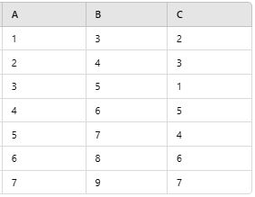

Exercices d’application
Contenu
Exercices d’application¶
Exercice 1¶
Exercice 1
On vous donne le tableau suivant :

Questions
Élaborez trois listes en Python représentant les vecteurs A, B et C.
Construisez une base de données (df) en utilisant la bibliothèque pandas.
Utilisez Python pour réaliser la visualisation appropriée des trois variables A, B et C.
Proposez une analyse des résultats obtenus
Exercice 2¶
Exercice 2
Un chercheur souhaite analyser la répartition des salaires mensuels dans un secteur économique donné et comparer les salaires entre les hommes et les femmes afin d’identifier d’éventuelles inégalités salariales. On dispose des données suivantes concernant les salaires mensuels des employés, ainsi que leur genre :
Salaire = (1800, 2200, 2500, 2700, 3000, 3000, 3500, 4000, 4200, 5000, 5200, 5800, 6000, 7500, 9000, 10 000, 10 000)
Genre = (H, F, H, F, H, F, H, F, H, F, H, F, H, F, H, F, H)
(Les valeurs « H » représentent les hommes et « F » représentent les femmes.)
Créez une base de données en utilisant les salaires et les genres fournis
Affichez les cinq premières lignes.
Quelle est la taille du dataset ?
Tracez un histogramme des salaires pour l’ensemble des données.
Commentez la forme de la distribution des salaires. Est-elle symétrique, biaisée à droite ou à gauche ?
Calculez et affichez la moyenne, la médiane et le mode des salaires pour l’ensemble des données, puis pour les hommes (H) et les femmes (F) séparément.
Interprétez les résultats en comparant les tendances centrales des deux groupes.
Tracez un boxplot des salaires pour les hommes et les femmes.
Y a-t-il des valeurs manquantes pour chaque groupe ?
Y a-t-il des valeurs aberrantes pour chaque groupe ? Justifiez votre réponse en fonction des résultats du boxplot.
Quelle est l’étendue des salaires pour chaque groupe ?
Calculez l’écart-type et le coefficient de variation des salaires pour chaque groupe. Interprétez ces mesures de dispersion.
Tracez un QQ-plot des salaires pour l’ensemble des données.
La distribution semble-t-elle suivre une loi normale ? Justifiez votre réponse à partir du graphique.
Réalisez un QQ-plot séparé pour les hommes et pour les femmes. Comparez les résultats.
Effectuez un test de Student pour comparer les salaires moyens des hommes et des femmes.